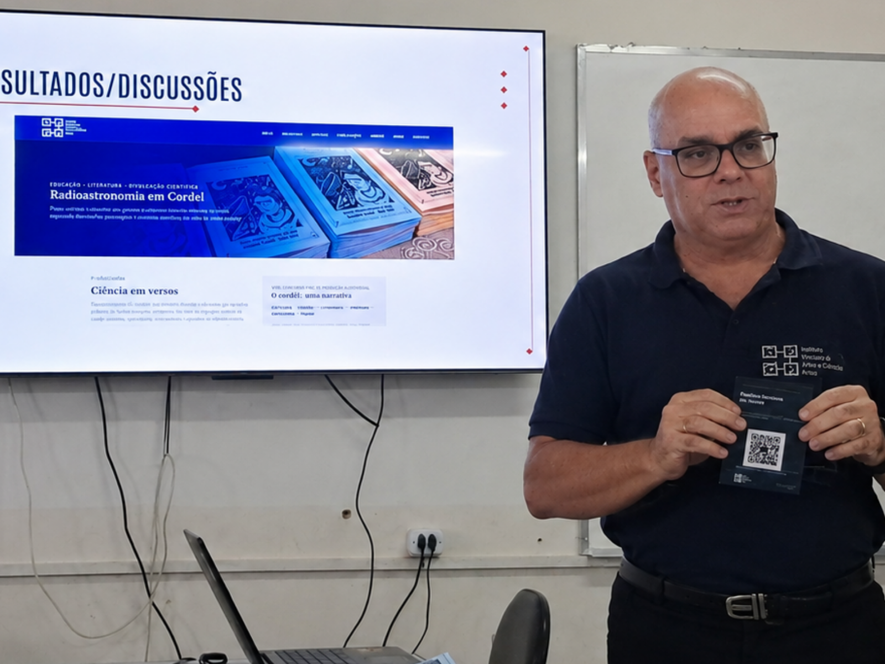

Nosso grupo de pesquisa em radioastronomia marcou presença na IV Jornada Internacional de Literatura de Cordel e Xilogravuras, realizada no Campus I da Universidade Federal de Campina Grande (UFCG), entre os dias 19 e 21 de agosto de 2026. O evento reuniu pesquisadores, artistas e poetas de diversas partes do país, em oficinas, mesas-redondas e minicursos dedicados a temas ligados à literatura de cordel e à xilogravura, duas importantes expressões da cultura popular brasileira.
Proposta para Sala de Aula

No dia 20 foi a vez de apresentarmos nossa proposta didática
do projeto Radioastronomia em Cordel no GT-1 — Literatura de cordel e ensino: vivências e propostas.
A programação do GT evidenciou a diversidade de possibilidades de utilização do cordel no
ambiente educacional, reunindo trabalhos relacionados à literatura, cultura popular, identidade,
tradução e diferentes experiências em sala de aula.
Nesse contexto, nossa apresentação levou a
radioastronomia para o debate, explorando o cordel como uma possível ponte entre cultura popular e educação científica.
Ao final da apresentação, distribuímos aos participantes uma cópia de
Pulsares: Relógios Cósmicos, um dos cordéis produzidos no âmbito do projeto,
ampliando a circulação do material entre pesquisadores, educadores e participantes da Jornada.
Experimentações com xilogravura
Aqui pode ser registrado o contato com a xilogravura durante o evento, incluindo a experiência visual envolvendo o radiotelescópio e o tangram, além dos possíveis desdobramentos dessa linguagem nas futuras produções gráficas do projeto.
Modelos de inserção de imagens
Os blocos abaixo são apenas exemplos de composição. Depois você pode substituir os textos, imagens, legendas e apagar os modelos que não forem utilizados.
1. Imagem em largura total
Este formato funciona bem para fotografias principais, registros de grupo, panorâmicas do evento ou imagens que precisem de mais espaço para leitura.

O texto continua normalmente depois da imagem, mantendo a largura e o ritmo de leitura definidos para o artigo.
2. Imagem menor e centralizada
Este formato é útil quando a fotografia não precisa ocupar toda a página, como no caso de detalhes, objetos, matrizes, capas, documentos ou registros verticais.
Em telas menores, a imagem continua respeitando a largura disponível e nunca ultrapassa os limites do artigo.
3. Imagem à esquerda com texto ao lado
Neste modelo, a imagem ocupa uma parte da largura do artigo e o texto flui ao seu lado. Ele pode funcionar muito bem para pequenas fotografias de atividades, detalhes da oficina, pessoas ou objetos que acompanham um trecho específico da narrativa.
No celular, essa composição deixa automaticamente de ser lateral: a imagem passa a ocupar a largura disponível e o texto aparece abaixo, evitando colunas estreitas e mantendo a leitura confortável.
4. Imagem à direita com texto ao lado
O funcionamento é semelhante ao modelo anterior, mas a imagem aparece à direita. Essa alternativa permite variar o ritmo visual da notícia sem precisar criar estruturas diferentes para cada página.
Também aqui o comportamento é responsivo: em telas estreitas, a imagem volta automaticamente para uma posição normal entre os parágrafos.
5. Duas imagens lado a lado
Este formato é especialmente útil para mostrar duas etapas de uma atividade, comparar matriz e impressão, apresentar dois registros do mesmo momento ou reunir fotografias complementares.
No notebook ou desktop as duas imagens aparecem lado a lado. No celular elas passam automaticamente para uma disposição vertical, uma abaixo da outra.